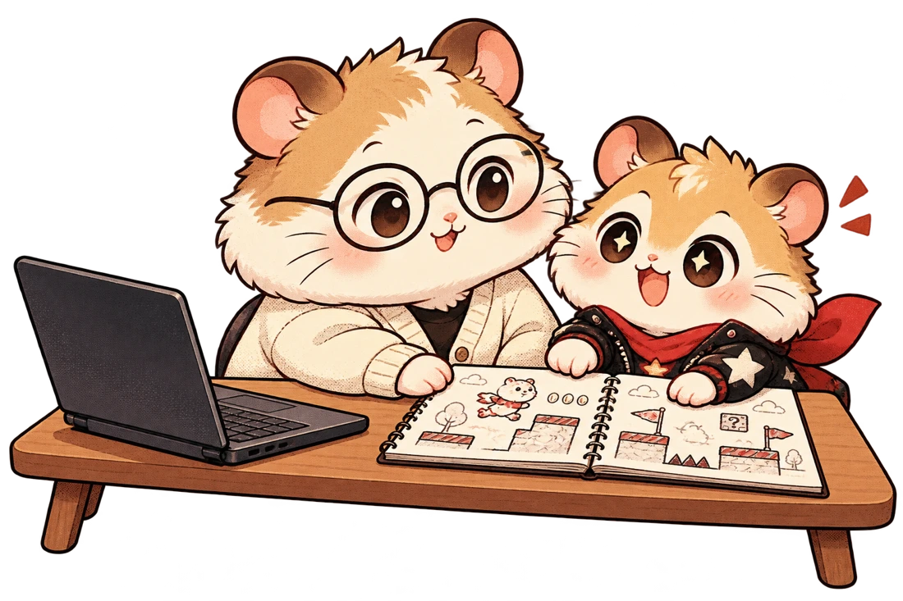

← กลับไปหน้าคอร์สลูกจะได้ฝึกอะไร?
ดูจากงานที่เขาทำได้.
ทำผลงานให้จบ อธิบายเหตุผลได้
และนำความคิดเห็นกลับมาปรับปรุง
การเร่งโต.
เริ่มที่ทำงานให้จบ
Starways Super Express พาผู้เรียนทำผลงานรุ่นแรก แล้วพัฒนาผ่านการค้นคว้า การวางกระบวนการ และการใช้งานจริงโดยผู้ใช้
ผู้ปกครองจึงชวนคุยได้ทั้งสิ่งที่สร้าง วิธีคิด และสิ่งที่แก้ ไม่ต้องเข้าใจศัพท์เทคนิคทุกคำ
- 01
เปลี่ยนไอเดียให้เป็นงานที่เปิดใช้ได้
26–30 ต.ค. · ฝึกเลือกส่วนสำคัญของงาน แล้วทำ MVP ที่นำมาสาธิตแนวคิดได้
- 02
พัฒนาอย่างมีเหตุผล
1–13 พ.ย. · ศึกษาผู้ใช้และตลาด พัฒนางานอย่างมีขั้นตอน แล้วฝึกนำเสนอให้คนอื่นเข้าใจ
- 03
พัฒนาจากเสียงของผู้ใช้จริง
16–27 พ.ย. · เรียนรู้การต่อยอดแบบ Startup ใช้งานจริง รับความคิดเห็น และนำเสนอผลงานปลายคอร์ส
รายละเอียด.
ก่อนตัดสินใจ
- คอร์ส
- Starways Super Express โดย Hamster Hub
- ช่วงเรียน
- 26 ต.ค. – 27 พ.ย. 2569
- วันเรียน
- จันทร์–ศุกร์ · ยืนยันเวลาเรียนรายวันกับทีม
Market Analysis ระบุช่วงกิจกรรม 1–3 พ.ย. - เป้าหมาย
- สร้าง MVP พัฒนาซอฟต์แวร์ รับฟังผู้ใช้จริง และนำเสนอคุณค่าของผลงาน
- พื้นฐานและอุปกรณ์
- แจ้งประสบการณ์และโปรเจกต์ของน้องให้ทีมประเมิน พร้อมยืนยันเครื่องมือและอุปกรณ์ที่ต้องใช้
- รูปแบบและค่าเรียน
- สอบถามทีม Hamster Hub ก่อนยืนยันสมัคร
ถามลูก.
จากสิ่งที่ทำจริง
- รุ่นแรกของงานทำอะไรได้แล้ว และทำไมเลือกทำส่วนนี้ก่อน?
- ตั้งใจทำให้ใคร ข้อมูลที่หามาทำให้เปลี่ยนไอเดียตรงไหน?
- คนที่ใช้งานจริงติดปัญหาอะไร และกลับมาแก้อะไรบ้าง?
- ถ้าต้องนำเสนอวันนี้ จะอธิบายประโยชน์ของงานอย่างไร?
- มีหลักฐานหรือภาพการพัฒนาอะไรที่นำไปเล่าต่อใน Portfolio ได้?
ผลงานใช้ประกอบการสมัครโอกาสต่าง ๆ ได้ตามเกณฑ์ของแต่ละแห่ง การเรียนคอร์สไม่ใช่การรับรองผลการคัดเลือกหรือรายได้
คุยให้ตรงเป้าหมาย.
ก่อนเริ่มไปด้วยกัน
แจ้งพื้นฐานของน้อง เป้าหมาย และเวลาที่มี
ให้ทีมช่วยดูความเหมาะสมก่อนตัดสินใจ
สอบถามเวลาเรียน รูปแบบการเรียน ค่าเรียน อุปกรณ์ และเงื่อนไขการสมัคร